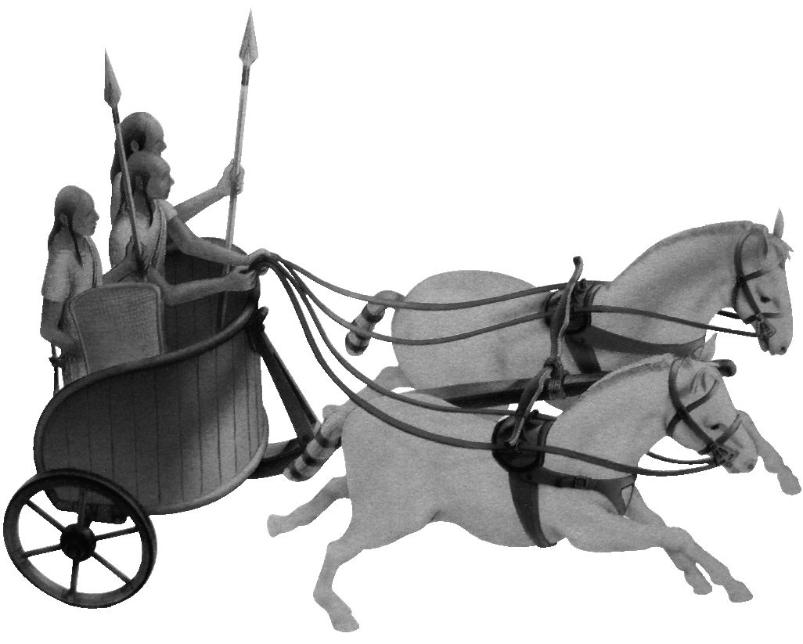

在公元前第二个千年中，无论是在中东、印度还是遥远的中国，所有的古代文明纷纷崩溃。那么，整个欧亚大陆政治败坏、社会离析，主要是由于内部的腐朽还是外部的入侵呢？要对这样一个涉及面很广的问题给出肯定而确切的回答，是极为困难的，但可以肯定的是，内因和外因在决定事态发展的过程中都起了重要作用。
首先是内部的虚弱。铜和青铜既昂贵又稀少，因而不能广泛地用来制造武器和工具。这就使武器实际上为君主及其政治、军事集团所垄断，从而加强了他们的特权地位，使他们处于社会金字塔的顶端。同时，这也意味着，在总人口中只有小部分人得以武装起来；当古老的文明中心必须面临全体武装的游牧民的进攻时，这就成为一个极其严重的缺点。铜和青铜极其昂贵，也使农民们得不到金属工具，不得不依靠石斧、石锄、石刀和石镰来从事生产，这就大大降低了生产率，因为石制工具不像金属工具那样效率高、经久耐用。
诸古代文明因这种内部的腐朽而虚弱不堪，所以很容易成为外来游牧民族入侵的目标（关于游牧民族的起源，见第二章第三节）。促使帝国崩溃的游牧集团主要有三个：来自南部沙漠地带的闪米特部落民、欧亚大草原西部的印欧人和大草原东部的蒙古——突厥各族。
印欧人与其说是一个种族群体，不如说是一个文化群体。他们早先大概发源于里海地区，曾在那里牧牛，并从事少量的耕作。因为主要靠畜牧为生，所以只要发现有更为理想的地方，他们就用大牛车载起所有行李，朝那里迁移。迁移时，总是整个整个的部落一起行动，妇女、孩子及战士全都参加。印欧人就这样向西推进到俄国南部和欧洲东南部，到公元前2000年时，他们已分布在从多瑙河平原到奥克苏斯河和贾哈特斯河流域的广阔地区。他们以这片广阔地区为根据地，日益威胁在地理上可进入的各文明中心——中东、巴尔干半岛和印度河流域。
在地处大草原西部的印欧各族和地处大草原东部的蒙古——突厥人之间，有一条最早的分界线，这就是阿尔泰山脉和天山山脉。这条分界线以东的大草原，地势较高、较干燥，气候通常也更恶劣。这里的牧场没有西部的牧场肥美，可以放牧羊、骆驼和马，但放牧牛不行。较贫穷的东部地区和较富裕的西部地区在地理上的这种差异，引起了一场持久的、影响深远的、由东向西的民族大迁徙。大草原东部的各民族或者是作为难民，或者是作为征服者，被吸引到西部。一批批部落前赴后继地向西推进——西徐亚人从阿尔泰山脉迁徙到乌克兰；突厥部落取代西徐亚人进入中亚，以后又尾随西徐亚人西进；最后，蒙古人也从后面向西推进，直到他们于13世纪崛起并侵占欧亚大部分地区、建立起一个大帝国为止。这些东方的游牧部落，由于其地理位置，不仅能进入欧洲、中东和印度，也能抵达中国；只要有机会，它们就不时地侵入中国。
由于由东向西的民族大迁徙，大草原西部诸民族的种族组成情况逐渐发生变化，至少在西至里海的地区内，由原先的高加索种人占优势变为由蒙古种人占优势。这一转变自公元前1千纪末叶开始，一直继续到中世纪结束。此后，操斯拉夫语的俄罗斯人用西方的技术装备自己，先是凭借滑膛枪和火炮，后又依靠机关枪和铁路，使种族组成的发展趋势转到相反方向。
最后，闪米特人大致占据了从地中海到底格里斯河、从托罗斯山脉到亚丁之间的地区。他们最早出现于阿拉伯半岛的沙漠地区，接连不断的迁徙浪潮贯穿了他们的整个历史。早先，闪米特人用驴作运输工具，到公元前1100年前后，骆驼的驯养改变了他们的文化，就像马的驯养改变了草原游牧民的文化一样。随着文明的兴起，闪米特人的许多部落居住到城市附近，与城市居民形成了一种共生关系，但又随时准备着，一有机会就去攻掠这些城市。
欧亚大陆边缘地区那些古老的文明中心对周围的游牧部落来说，有如一块块有着不可抗拒的吸引力的磁铁。丰富的农作物、堆满谷物的粮仓、城市里令人眼花缭乱的各种奢侈品，所有这一切都吸引着大草原和沙漠地区饥饿的游牧民。因此，诸古老的文明中心不时遭到侵掠，尤其是美索不达米亚的城市，它们比克里特岛、尼罗河或印度河流域的城市更易受到侵掠。不用说，所有文明的定居民族都将游牧民视为令人厌恶的东西。一位埃及官员写到闪米特游牧民时说：“他们的名字散发出比鸟粪更难闻的恶臭。”在欧亚大陆的另一端，中国的一位朝廷大臣同样辱骂蒙古人说：“他们胸藏虎狼之心……自古以来，就没人把他们当人看过。”
直到公元前第二个千年，整个欧亚大陆的力量均势才开始转变，诸伟大文明的生存才第一次受到游牧民的威胁。马的驯养和较迟出现的冶铁技术是两个至关重要的发明，它们使游牧民获得新的作战能力。就目前所知，中东是最早驯养动物的地方，也是最早乘骑动物的地方。这两者发生的时间约在公元前5000年前后。不过，在早期阶段，乘骑动物的现象并不多见，因为那时所能得到的动物仅有牛和野驴，牛速度太慢，野驴个儿太小。然而，驯养动物的做法后又向北传到产有野驴和野马的俄国南部。到公元前2500年，这两种动物已在当地得到驯养；而且，由于马个儿大、体格壮、速度快，很快就受到俄国南部游牧民的偏爱。他们采取择优繁殖的方法，使马的个儿愈来愈大。野马的平均高度为13手之宽（一手之宽约合4英寸），而现代家马的平均高度为15手至16手之宽。如果不加选择地让马繁殖数代，家马的个儿很快又会缩小，就像美国西部的野马那般大小。
游牧民利用马打仗时，最早的做法是将马套到轻便的双轮车上。这种车的轮子装有轮辐，比起美索不达米亚笨重的实心四轮车，大大改进了。高大的马和灵便的车相结合，使游牧民得到了一种令人生畏的武器——战车。公元前2千纪，游牧民就是驾着这种战车，掀起最早的入侵浪潮。驾车作战时，一名战士驭马，其他战士用强弩射箭。众弩齐射，飞箭如雨，没有几个步兵能长时间地抵挡，更不用说抵抗紧接着发起冲锋的密集的战车。
到公元前2千纪末，游牧民用骑兵取代战车，进一步提高了他们的战斗力。这时的马既高大又强壮，人可以直接骑驭。而且，游牧民还发明了役使马的马勒、马嚼子、角状的马鞍和马镫，使他们能在策马飞奔时腾出双手，射出阵雨般的箭。欧亚大陆的游牧民获得前所未有的灵活机动性，能追上和打败防守城市中心的军队。古典时代和中世纪时，游牧民的军事才能主要就建立在骑马作战这一基础上；这一技术最终导致成吉思汗在13世纪完成一系列惊人的征服。直到西方火器占据优势之后，诸文明中心才从游牧民频频入侵的威胁中解脱出来。
对沙漠地带的游牧民来说，骆驼的作用不亚于马。骆驼有两种：阿拉伯的单峰骆驼和大夏的双峰骆驼；前者适应于炎热的沙漠环境，后者适应于寒冷的沙漠环境。这两种骆驼都能在即便是驴也会饿死的地区生活，都能依靠驼峰里贮存的脂肪和多室的胃里贮存的水不吃不喝地行走几个星期。最早驯养骆驼的时间和地点现在还不清楚，不过，到公元前1000年时，穿越中亚和中东沙漠地区的交通运输就已全靠这种“沙漠之舟”。

图23 赫梯人带有轮辐的战车模型。
冶铁技术的发明也提高了游牧民的战斗力。公元前2千纪中叶，这一技术在小亚细亚东北部发展起来；但是，直到约公元前1200年赫梯帝国灭亡后，当地的铁匠才分散到各地，使他们的技术广泛流传。冶铁技术之所以出现得晚，主要是由于冶炼铁矿的工艺与冶炼铜和铜合金的工艺根本不同。
冶铜时，金属熔液沉于炉底，而熔渣浮在上面。冶铁时，至少在古代熔炉所能达到的温度范围内，铁不能完全液化，而是形成一种灰色的多孔体，技术上称之为铁块。反复锤打炽热的铁块，能使其成为熟铁，这一发现来得较迟是可以理解的。这种新金属比起当时已能冶铸的铜和青铜来，绝不是一种进步，因为它不易铸造，需要更多的燃料，而且其锋刃较易失去。后来才发现，将铁反复锤打、加热、投入冷水（淬火），并与木炭燃料接触，可以使其坚硬。当时所须发现的不仅仅是一种新金属，而且还包括一种崭新的冶金术——对此，凭以往经验行事的早期铁匠毫无准备。
虽然改进冶铸方法后铁比过去坚硬了，但仍然很易生锈。不过，这一缺陷由于铁矿较之铜和锡分布远为广泛、制造成本相应低廉，而得到补偿，而且，这种补偿已超过缺陷本身。现在，普通农民也买得起铁制工具。农业生产率提高了，农业范围扩展到从前石斧无力对付的森林茂密区。这种廉价的新金属对欧亚大陆的军事平衡也具有重大影响。从前，贫穷的游牧民不能像城市中心的统治者那样，以大量昂贵的青铜武器装备自己，但现在，铁矿几乎每个地区都可得到，每个村子的铁匠都能锻制出比旧武器更优良、更便宜的新武器。因而，游牧战士现在不仅在灵活机动性上占有优势，而且和守卫文明地区的士兵一样，拥有同样优良、大量的铁制武器。